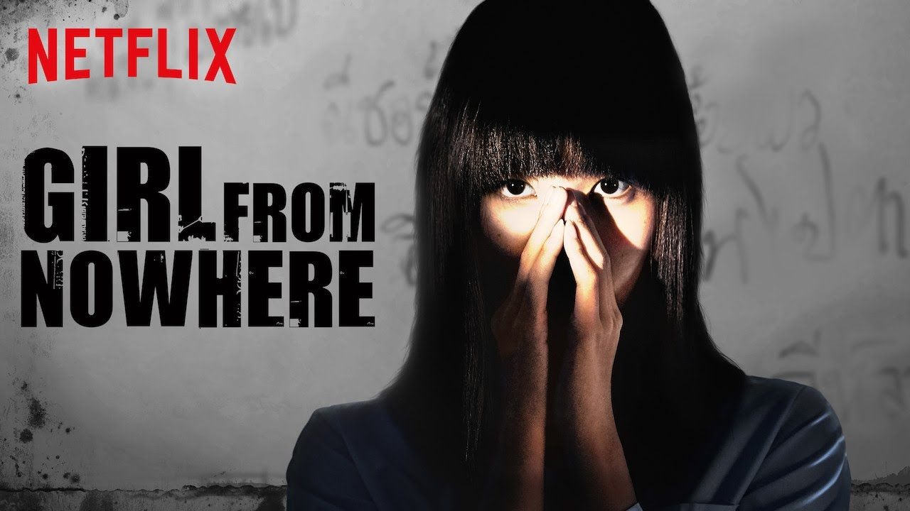

| Series Image | Synopsis | Information | Series Reviews | Rating |
|---|---|---|---|---|

|
A mysterious, clever girl named Nanno transfers to different schools, exposing the lies and misdeeds of the students and faculty at every turn. |
Actors/Actresses: Kitty Chicha (Nanno), Chanya McClory (Yuri), Teeradon Supapunpinyo (Nanai), Naomi Amante (Bam's Sister), Morakot Liu (Bam)
Director: Komgrit Triwimol (6 episodes, 2018-2021) Jatuphong Rungrueangdechaphat (4 episodes, 2018-2021) Pairach Khumwan (3 episodes, 2018-2021)
Episodes in total: 21 Seasons: 2 |
Anonymous: "I love this series, it really makes me see the society nowadays" Anonymous: "Too violent, but its ok" |
7.6/10 |

|
Set in a fictional country called Daeho, it is about the love and growth of young mages as they overcome their twisted fates due to a forbidden magic spell known as the "alchemy of souls", which allows souls to switch bodies. |
Actors/Actresses: Lee Jae-wook (Jang Uk), Jung So-min (Mu-Deok), Hwang Min-Hyun (Seo Yul), Go Yoon-Jung (Naksu)
Director: Joon Hwa Park (30 episodes, 2022-2023)
Episodes in total: 30 Seasons: 2 |
Anonymous: "Its so romantic, makes my toes curl. HEHEHE" Anonymous: "JANG UKKKKKKKKKK, MY LOVEEEE" |
8.8/10 |

|
Obsessed gamer Arisu suddenly finds himself in a strange, emptied-out version of Tokyo in which he and his friends must compete in dangerous games in order to survive. |
Actors/Actresses: Kento Yamazaki (Arisu), Tao Tsuchiya (Usagi), Nijirô Murakami (Chisiya), Riisa Naka (Mira Kano)
Director:
Shinsuke Sato (17 episodes, 2020-2025)
Episodes in total: 17 Seasons: 3 |
Anonymous: "It is a very bloody series. I love it, it shows teamwork and determination of survival" Anonymous: "Chisiya is kinda... " |
7.7/10 |